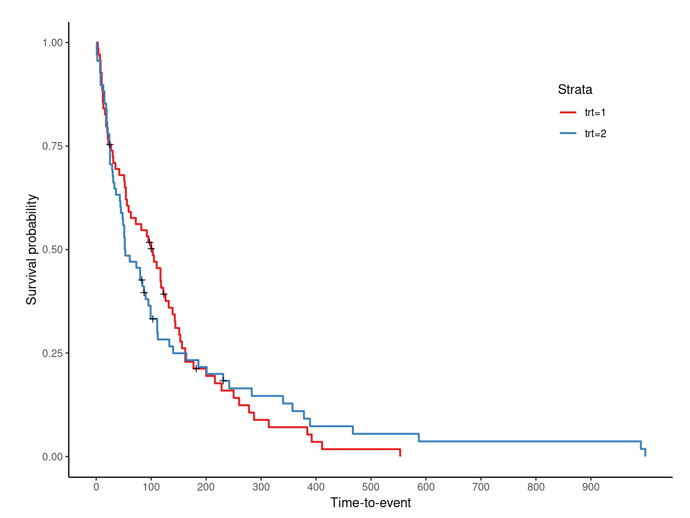
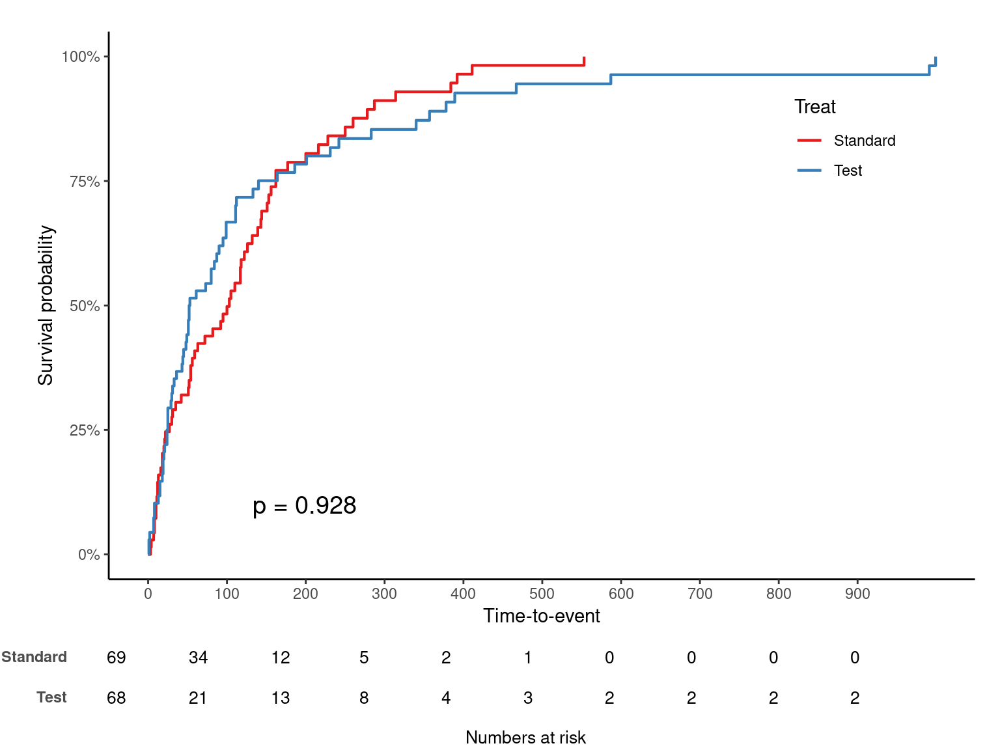
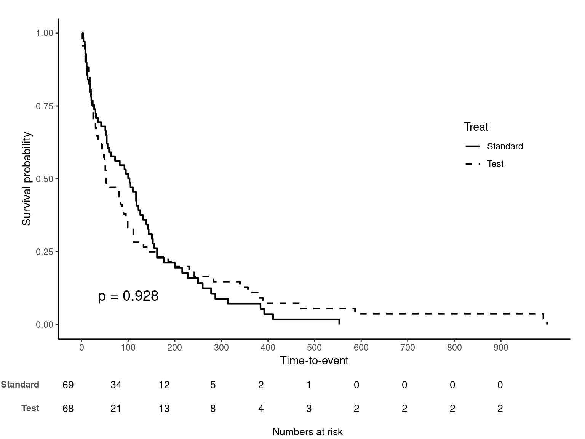
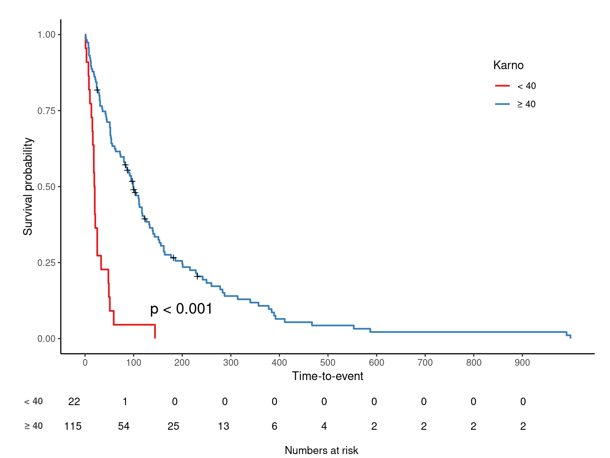
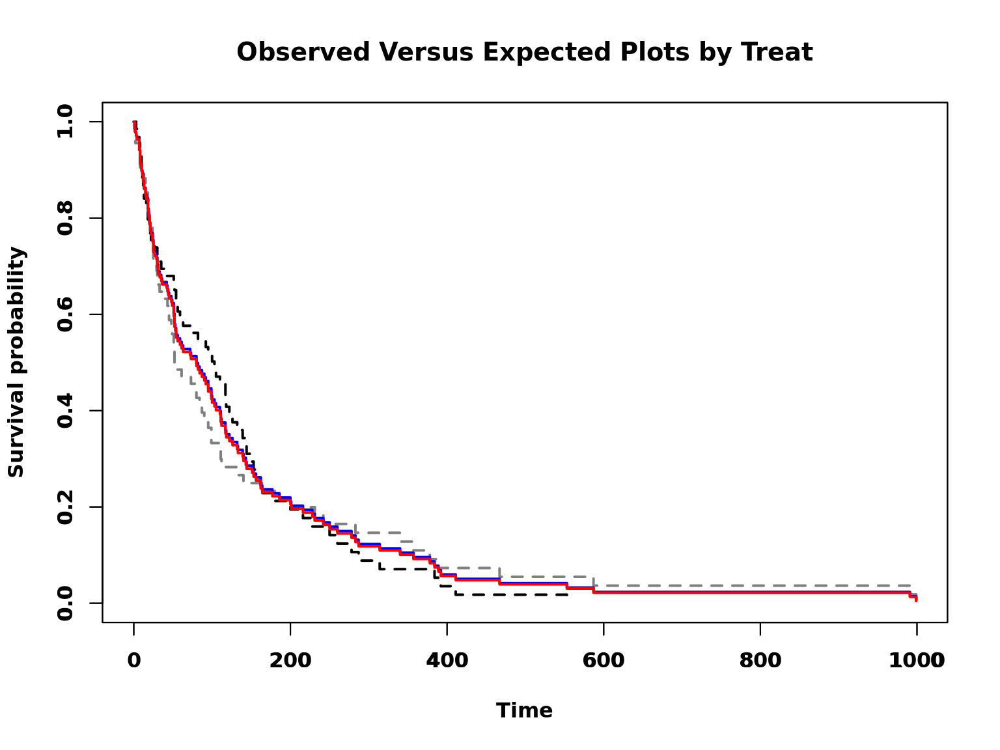

Table of Contents
김진섭 대표는 성균관의대 사회의학교실 김종헌 교수님 수업에 참가, Kaplan-meier curve, 비례위험가정 및 모형적합도, Time-dependent covariate 그리고 모수적 생존분석을 중심으로 R 코드를 실습할 예정입니다.
요약
자체 개발한 jskm 패키지로 kaplan-meier 그림을 그린다.
Log-log plot, Observed-expected plot 으로 비례위험가정을 확인 후,
cox.zph함수로 p-value 를 구한다.anova로 여러 모형의 log-likelohood 를 비교하고,step으로 AIC 기반 최적모형을 고를 수 있다.
Kaplan-meier plot
Kaplan-meier plot 은 R 기본 plot에서도 제공하지만, survminer 패키지의 ggsurvplot 함수에서 다양한 옵션을 제공한다. 본 실습에서는 본사가 개발한 jskm 패키지의 jskm 함수를 survival 패키지 내장 데이터 veteran 에 적용하겠다. 우선 패키지를 불러온 후 survfit 으로 구간별 생존율을 구하자.
library(DT);library(survival);library(jskm)
datatable(veteran, rownames = F, caption = "Example data")
sfit <- survfit(Surv(time, status) ~ trt, data = veteran)
summary(sfit, times = c(100, 200, 300, 365), extend = T)
Call: survfit(formula = Surv(time, status) ~ trt, data = veteran)
trt=1
time n.risk n.event survival std.err lower 95% CI upper 95% CI
100 34 34 0.5020 0.0606 0.3962 0.636
200 12 19 0.1947 0.0501 0.1176 0.322
300 5 6 0.0885 0.0371 0.0390 0.201
365 4 1 0.0708 0.0336 0.0279 0.180
trt=2
time n.risk n.event survival std.err lower 95% CI upper 95% CI
100 21 45 0.333 0.0578 0.2367 0.467
200 13 7 0.216 0.0517 0.1354 0.345
300 8 4 0.146 0.0454 0.0797 0.269
365 6 2 0.110 0.0407 0.0530 0.227trt 1 은 “Standard”, 2 는 “Test” 이며 jskm 을 적용하면 아래와 같다.
jskm(sfit)
라벨을 수정하고, risk table 과 log-rank p-value 를 추가하자.
jskm(sfit, ystrataname = "Treat", ystratalabs = c("Standard", "Test"), table = T, pval = T)
십자가 무늬는 실제 censoring 이 발생한 부분이며 mark = F 로 숨길 수 있다. 생존율이 아닌 누적발생률을 %로 보는 코드는 아래와 같다.
jskm(sfit, ystrataname = "Treat", ystratalabs = c("Standard", "Test"), table = T, pval = T,
marks = F, cumhaz = T, surv.scale = "percent" )
p-value 위치는 pval.coord legend 위치는 legendposition 옵션을 이용한다. 선을 흑백으로 바꾸려면 linecols = "black" 을 추가한다. legendposition 은 x,y 값 모두 0~1 scale 임을 주의하자.
jskm(sfit, ystrataname = "Treat", ystratalabs = c("Standard", "Test"), table = T, pval = T,
marks = F, pval.coord = c(100, 0.1), legendposition = c(0.85, 0.6), linecols = "black")
마지막으로 특정 시간을 기준으로 나누어보는 landmark analysis 옵션을 소개한다.
jskm(sfit, ystrataname = "Treat", ystratalabs = c("Standard", "Test"), table = T, pval = T,
marks = F, cut.landmark = 365)
비례위험가정 확인
자세한 내용은 https://3months.tistory.com/357?category=743476 를 참고하기 바란다.
Log-log plot
plot(sfit, fun="cloglog", lty=1:2, col=c("Black", "Grey50"), lwd=2, font.lab=2, main="Log-log KM curves by Treat", ylab="log-log survival", xlab="Time (log scale)")
legend("bottomright",lty=1:2,legend=c("Standard", "Test"), bty="n", lwd=2, col=c("Black", "Grey50"))
Observed-expected plot
plot(sfit, lty="dashed", col=c("Black", "Grey50"), lwd=2, font=2, font.lab=2, main="Observed Versus Expected Plots by Treat", ylab="Survival probability", xlab="Time")
par(new=T)
#expected
exp <- coxph(Surv(time, status) ~ trt, data = veteran)
new_df <- data.frame(trt = c(1, 2))
kmfit.exp <- survfit(exp, newdata = new_df)
plot(kmfit.exp, lty = "solid", col=c("Blue", "Red"), lwd=2, font.lab=2)
Goodness of fit
cox.zph(exp)
chisq df p
trt 3.54 1 0.06
GLOBAL 3.54 1 0.06
plot(cox.zph(exp), var = "trt")
abline(h = 0, lty = 3)
선이 시간 상관없이 일정할수록, 즉 x축과 평행할수록 비례위험가정을 만족한다고 판단한다. 위 그림은 x축과 평행은 아니지만 경향성이 있다고 볼수도 없는 애매한 느낌이며 p 는 round(z$table[, 3][1], 3) 이다.
모형 비교
Cox 모형에서 얻은 log-likelihood 값으로 여러 모형을 비교할 수 있다. 모형들은 n수가 전부 동일 해야 비교 가능하므로, 에러 나올땐 먼저 결측치를 확인하자.
exp$loglik
[1] -505.4491 -505.4442
exp2 <- coxph(Surv(time, status) ~ trt + age, data = veteran)
exp3 <- coxph(Surv(time, status) ~ trt + age + celltype, data = veteran)
anova(exp, exp2, exp3)
Analysis of Deviance Table
Cox model: response is Surv(time, status)
Model 1: ~ trt
Model 2: ~ trt + age
Model 3: ~ trt + age + celltype
loglik Chisq Df P(>|Chi|)
1 -505.44
2 -505.14 0.6162 1 0.4325
3 -492.43 25.4161 3 1.264e-05 ***
---
Signif. codes: 0 '***' 0.001 '**' 0.01 '*' 0.05 '.' 0.1 ' ' 1step 함수를 이용, AIC 기반 최적 모형을 고를 수 있다. scope 옵션으로 빠지면 안 될 변수를 미리 정한다.
step(exp3, scope = list(lower = ~ 1))
Start: AIC=994.86
Surv(time, status) ~ trt + age + celltype
Df AIC
- age 1 993.04
- trt 1 993.65
<none> 994.86
- celltype 3 1014.27
Step: AIC=993.04
Surv(time, status) ~ trt + celltype
Df AIC
- trt 1 992.05
<none> 993.04
- celltype 3 1012.89
Step: AIC=992.05
Surv(time, status) ~ celltype
Df AIC
<none> 992.05
- celltype 3 1010.90
Call:
coxph(formula = Surv(time, status) ~ celltype, data = veteran)
coef exp(coef) se(coef) z p
celltypesmallcell 1.0013 2.7217 0.2535 3.950 7.83e-05
celltypeadeno 1.1477 3.1510 0.2929 3.919 8.90e-05
celltypelarge 0.2301 1.2588 0.2773 0.830 0.407
Likelihood ratio test=24.85 on 3 df, p=1.661e-05
n= 137, number of events= 128 Time-dependent covariate
자세한 내용은 https://cran.r-project.org/web/packages/survival/vignettes/timedep.pdf 을 참고하기 바란다.
vet2 <- survSplit(Surv(time, status) ~ ., data= veteran, cut=c(90, 180), episode = "tgroup", id = "id")
datatable(vet2, rownames = F, caption = "Time split data")